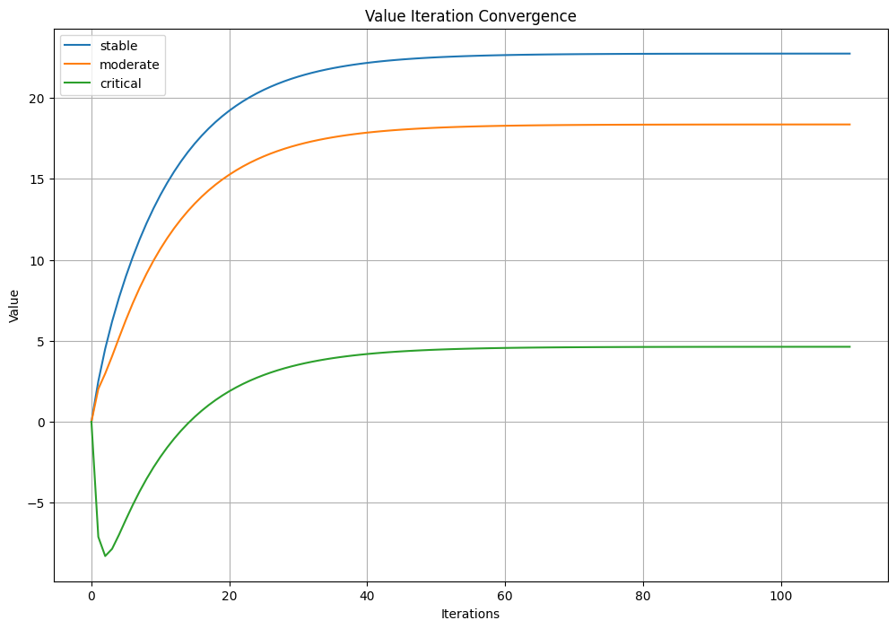

import numpy as np
import pandas as pd
import matplotlib.pyplot as plt
import seaborn as sns1. Python implementation of the Value Iteration algorithm
\[ p(s'\mid s, a) \doteq \Pr \{ S_t = s' \mid S_{t-1} = s, A_{t-1} = a \}, \text{for all } s',s \in \mathcal{S} \text{ and } a \in \mathcal{A(s)} \]
The transition function \(p\) is a function that gives the probability of moving from state \(s\) to state \(s'\) given action \(a\). It is defined as the conditional probability of the next state given the current state and action taken. The notation \(\mathcal{A(s)}\) indicates that the action set may depend on the current state \(s\).
Bellman Equations
The Bellman equations express the relationship between the value of a state and the values of its successor states. They are used to derive optimal policies and value functions in Markov Decision Processes (MDPs) and reinforcement learning.
Input:
\(\pi\), the policy to be evaluated
Algorithm parameter: a small threshold \(\theta > 0\) determining accuracy of estimation
Initialize \(V(s)\) arbitrarily, for \(s \in \mathcal{S}\), and \(V(\text{terminal}) = 0\)
Loop:
\(\Delta \leftarrow 0\)
Loop for each \(s \in \mathcal{S}\):
\(v \leftarrow V(s)\)
\(V(s) \leftarrow \sum_a \pi(a|s) \sum_{s', r} p(s', r | s, a) [r + \gamma V(s')]\)
\(\Delta \leftarrow \max(\Delta, |v - V(s)|)\)
until \(\Delta < \theta\)
Value Iteration
- Value iteration is obtained simply by turning the Bellman optimality equation into an update rule.
- Also note how the value iteration update is identical to the policy evaluation update except that it requires the maximum to be taken over all actions.
def value_iteration(env, gamma=0.99, theta=1e-6):
"""
Performs value iteration to compute an optimal policy.
Args:
env: An environment that provides:
- env.states: a list of all states
- env.actions(s): a list of actions available in state s
- env.transitions(s, a): a list of (probability, next_state, reward) tuples
- env.is_terminal(s): a function to check if a state is terminal
gamma: Discount factor.
theta: Small threshold for convergence.
Returns:
A tuple (V, pi) where:
- V is a dict of state -> value
- pi is a dict of state -> optimal action
"""
V = {s: 0.0 for s in env.states}
history = {s: [0] for s in env.states}
for s in env.states:
if env.is_terminal(s):
V[s] = 0.0 # terminal states have zero value
while True:
delta = 0
for s in env.states:
if env.is_terminal(s):
continue
v = V[s]
action_values = []
for a in env.actions(s):
q = sum(
prob * (reward + gamma * V[next_state])
for prob, next_state, reward in env.transitions(s, a)
)
action_values.append(q)
V[s] = max(action_values)
history[s].append(V[s])
delta = max(delta, abs(v - V[s]))
if delta < theta:
break
# Derive the policy
policy = {}
for s in env.states:
if env.is_terminal(s):
policy[s] = None
continue
best_action = max(
env.actions(s),
key=lambda a: sum(
prob * (reward + gamma * V[next_state])
for prob, next_state, reward in env.transitions(s, a)
)
)
policy[s] = best_action
return V, policy, history1.1 Example usage- Environment for Diabetes Care
- This environment simulates a diabetes care scenario with different states and actions.
- The states represent the health status of a patient, and the actions represent different care strategies.
- The transitions define the probabilities of moving from one state to another based on the action taken.
- The rewards are based on the health outcomes of the actions taken.
class DiabetesCareEnv:
def __init__(self):
# all possible states
self.states = ["stable", "moderate", "critical", "dead"]
self._terminal_states = {"dead"}
def is_terminal(self, s):
return s in self._terminal_states
def actions(self, s):
if s == "dead":
return []
return ["lifestyle", "medicate", "intensive_care"]
def transitions(self, s, a):
"""
Returns a list of (probability, next_state, reward) tuples.
Each action from a state leads to all possible states.
"""
if s == "stable":
if a == "lifestyle":
return [
(0.80, "stable", 8),
(0.10, "moderate", 0),
(0.05, "critical", -10),
(0.05, "dead", -100),
]
elif a == "medicate":
return [
(0.85, "stable", 6),
(0.10, "moderate", -3),
(0.03, "critical", -10),
(0.02, "dead", -100),
]
elif a == "intensive_care":
return [
(0.90, "stable", -5),
(0.05, "moderate", -8),
(0.03, "critical", -15),
(0.02, "dead", -100),
]
elif s == "moderate":
if a == "lifestyle":
return [
(0.50, "stable", 5),
(0.30, "moderate", -1),
(0.15, "critical", -6),
(0.05, "dead", -50),
]
elif a == "medicate":
return [
(0.60, "stable", 6),
(0.25, "moderate", 0),
(0.10, "critical", -5),
(0.05, "dead", -50),
]
elif a == "intensive_care":
return [
(0.70, "stable", 3),
(0.20, "moderate", -2),
(0.05, "critical", -10),
(0.05, "dead", -80),
]
elif s == "critical":
if a == "lifestyle":
return [
(0.05, "stable", 2),
(0.10, "moderate", -3),
(0.50, "critical", -12),
(0.35, "dead", -100),
]
elif a == "medicate":
return [
(0.10, "stable", 3),
(0.30, "moderate", -2),
(0.50, "critical", -8),
(0.20, "dead", -100),
]
elif a == "intensive_care":
return [
(0.30, "stable", 5),
(0.30, "moderate", 0),
(0.30, "critical", -3),
(0.10, "dead", -90),
]
elif s == "dead":
return [(1.0, "dead", 0)]
return []env = DiabetesCareEnv()
V, policy, hist = value_iteration(env, gamma=0.95, theta=1e-4)
for state in env.states:
print(f"State: {state:10s} | Value: {V[state]:6.2f} | Best Action: {policy[state]}")State: stable | Value: 22.73 | Best Action: medicate
State: moderate | Value: 18.36 | Best Action: medicate
State: critical | Value: 4.63 | Best Action: intensive_care
State: dead | Value: 0.00 | Best Action: Noneplt.figure(figsize=(12, 8))
for state in env.states:
if state == "dead":
continue
plt.plot(hist[state], label=state)
plt.title("Value Iteration Convergence")
plt.xlabel("Iterations")
plt.ylabel("Value")
plt.legend()
plt.grid()
plt.show()
1.2 Interpretation
- \(\pi(s)\) = lifestyle: Suggests conservative management is best.
- \(\pi(s)\) = medicate: Indicates medical intervention is effective and worth the cost.
- \(\pi(s)\) = intensive_care: Signals high urgency; aggressive action justified.
interp = {
'state': ['stable', 'moderate', 'critical', 'dead'],
'best_action': ['lifestyle', 'medicate', 'intensive_care', "none"],
'interpretation': [
'Encourage self-care',
'Best to intervene with medication',
'Aggressive care needed to avoid death.',
'No further action needed.'
]}
interp_df = pd.DataFrame(interp)
interp_df| state | best_action | interpretation | |
|---|---|---|---|
| 0 | stable | lifestyle | Encourage self-care |
| 1 | moderate | medicate | Best to intervene with medication |
| 2 | critical | intensive_care | Aggressive care needed to avoid death. |
| 3 | dead | none | No further action needed. |
2. Python implementation Monte Carlo ES (Exploring Starts), for estimating \(\pi \approx \pi_*\)
Alternating complete steps of policy evaluation and policy improvement are performed, beginning with an arbitrary policy \(\pi_0\) and ending with the optimal policy and optimal action-value function:
\[ \pi_0 \xrightarrow E q_{\pi_0} \xrightarrow I \pi_1 \xrightarrow E q_{\pi_1}\xrightarrow I \pi_2,\dots,\xrightarrow I \pi_* \xrightarrow E q_* \]
from collections import defaultdict
import random
def monte_carlo_es(env, gamma=0.95, episodes=5000):
Q = defaultdict(lambda: defaultdict(float)) # initializes Qs
Q_history = defaultdict(lambda: defaultdict(list)) # initializes Q history
Returns = defaultdict(lambda: defaultdict(list)) # initializes returns
pi = {}
for s in env.non_terminal_states():
pi[s] = random.choice(env.actions(s))
def generate_episode(s0, a0):
episode = []
env.reset(s0)
state = s0
action = a0
done = False
while not done:
next_state, reward, done = env.step(action)
episode.append((state, action, reward))
if done:
break
state = next_state
action = pi[state]
return episode
for _ in range(episodes):
# Exploring starts: random (state, action) pair with > 0 probability
s0 = random.choice(env.non_terminal_states())
a0 = random.choice(env.actions(s0))
episode = generate_episode(s0, a0)
G = 0
visited = set()
for t in reversed(range(len(episode))):
s, a, r = episode[t] # get state, action, reward from T to 0
G = gamma * G + r # calculate return
if (s, a) not in visited:
visited.add((s, a)) # store state-action pair
Returns[s][a].append(G) # store returns
Q[s][a] = sum(Returns[s][a]) / len(Returns[s][a]) # update Q
Q_history[s][a].append(Q[s][a]) # store Q history
pi[s] = max(env.actions(s), key=lambda x: Q[s][x]) # update policy
return Q, pi, Q_historyimport random
class SimulatedHealthcareEnv:
def __init__(self):
self.states = ["stable", "moderate", "critical", "dead"]
self._terminal_states = {"dead"}
self.state = None
# Hidden transition model (not visible to agent)
self.transition_model = {
"stable": {
"lifestyle": [("stable", 0.80, 8), ("moderate", 0.10, -2), ("critical", 0.05, -10), ("dead", 0.05, -100)],
"medicate": [("stable", 0.85, 6), ("moderate", 0.10, -3), ("critical", 0.03, -10), ("dead", 0.02, -100)],
"intensive_care": [("stable", 0.90, -5), ("moderate", 0.05, -8), ("critical", 0.03, -15), ("dead", 0.02, -100)],
},
"moderate": {
"lifestyle": [("stable", 0.50, 5), ("moderate", 0.30, -1), ("critical", 0.15, -6), ("dead", 0.05, -50)],
"medicate": [("stable", 0.60, 6), ("moderate", 0.25, 0), ("critical", 0.10, -5), ("dead", 0.05, -50)],
"intensive_care": [("stable", 0.70, 3), ("moderate", 0.20, -2), ("critical", 0.05, -10), ("dead", 0.05, -80)],
},
"critical": {
"lifestyle": [("stable", 0.05, 2), ("moderate", 0.10, -3), ("critical", 0.50, -12), ("dead", 0.35, -100)],
"medicate": [("stable", 0.10, 3), ("moderate", 0.20, -2), ("critical", 0.50, -8), ("dead", 0.20, -100)],
"intensive_care": [("stable", 0.30, 5), ("moderate", 0.30, 0), ("critical", 0.30, -3), ("dead", 0.10, -90)],
}
}
def reset(self, state=None):
self.state = state or random.choice(self.non_terminal_states())
return self.state
def non_terminal_states(self):
return [s for s in self.states if s not in self._terminal_states]
def is_terminal(self, s):
return s in self._terminal_states
def actions(self, s):
if self.is_terminal(s):
return []
return list(self.transition_model[s].keys())
def step(self, action):
transitions = self.transition_model[self.state][action] # get the transitions for the current state and action
next_states, probs, rewards = zip(*transitions) # unpack the transitions
idx = random.choices(range(len(probs)), weights=probs)[0] # select an index based on the probabilities
next_state = next_states[idx] # get the next state
reward = rewards[idx] # get the reward
done = self.is_terminal(next_state) # check if the next state is terminal
self.state = next_state # update the current state
return next_state, reward, doneenv = SimulatedHealthcareEnv()
Q, pi, q_history = monte_carlo_es(env, gamma=0.95, episodes=10000)
print("Optimal Policy Learned via Monte Carlo ES:")
for state in env.states:
if state in pi:
print(f"State: {state:10s} | Best Action: {pi[state]}")
else:
print(f"State: {state:10s} | [Terminal]")Optimal Policy Learned via Monte Carlo ES:
State: stable | Best Action: intensive_care
State: moderate | Best Action: lifestyle
State: critical | Best Action: intensive_care
State: dead | [Terminal]from collections import defaultdict
import random
def mc_control_on_policy(env, gamma=0.95, epsilon=0.1, episodes=5000):
"""
On-policy First-Visit Monte Carlo Control for ε-soft policies.
Returns:
- Q: state-action value function
- pi: policy as a probability distribution over actions
"""
Q = defaultdict(lambda: defaultdict(float))
Returns = defaultdict(lambda: defaultdict(list))
pi = defaultdict(dict) # pi[state][action] = probability
# Initialize ε-soft policy arbitrarily
for s in env.non_terminal_states():
actions = env.actions(s)
for a in actions:
pi[s][a] = 1.0 / len(actions)
def select_action(state):
"""Sample action from current ε-soft policy."""
actions = list(pi[state].keys())
probs = list(pi[state].values())
return random.choices(actions, weights=probs)[0]
def generate_episode():
"""Generate one episode following the current policy."""
episode = []
state = env.reset()
done = False
while not done:
action = select_action(state)
next_state, reward, done = env.step(action)
episode.append((state, action, reward))
state = next_state
return episode
for _ in range(episodes):
episode = generate_episode()
G = 0
visited = set()
for t in reversed(range(len(episode))):
s, a, r = episode[t]
G = gamma * G + r
if (s, a) not in visited:
visited.add((s, a))
Returns[s][a].append(G)
Q[s][a] = sum(Returns[s][a]) / len(Returns[s][a])
# Improve policy at state s
actions = env.actions(s)
best_action = max(actions, key=lambda x: Q[s][x])
for act in actions:
if act == best_action:
pi[s][act] = 1 - epsilon + epsilon / len(actions)
else:
pi[s][act] = epsilon / len(actions)
return Q, pi
env = SimulatedHealthcareEnv()
Q, pi = mc_control_on_policy(env, gamma=0.95, epsilon=0.1, episodes=10000)
print("Learned ε-soft Policy:")
for state in env.non_terminal_states():
print(f"State: {state}")
for action in pi[state]:
print(f" Action: {action:15s} | Prob: {pi[state][action]:.2f}")
Learned ε-soft Policy:
State: stable
Action: lifestyle | Prob: 0.03
Action: medicate | Prob: 0.93
Action: intensive_care | Prob: 0.03
State: moderate
Action: lifestyle | Prob: 0.03
Action: medicate | Prob: 0.03
Action: intensive_care | Prob: 0.93
State: critical
Action: lifestyle | Prob: 0.03
Action: medicate | Prob: 0.03
Action: intensive_care | Prob: 0.933. Python implementation of SARSA algorithm
from collections import defaultdict
import random
def sarsa(env, alpha=0.1, gamma=0.95, epsilon=0.1, episodes=5000):
"""
SARSA: On-policy TD control.
Args:
env: A simulated environment (like SimulatedHealthcareEnv)
alpha: Step size (learning rate)
gamma: Discount factor
epsilon: Exploration probability for ε-greedy policy
episodes: Number of episodes to train
Returns:
Q: State-action value function
pi: Final greedy policy derived from Q
"""
Q = defaultdict(lambda: defaultdict(float))
q_history = defaultdict(lambda: defaultdict(list))
def epsilon_greedy_action(state):
actions = env.actions(state)
if not actions:
return None
if random.random() < epsilon:
return random.choice(actions)
else:
return max(actions, key=lambda a: Q[state][a])
for _ in range(episodes):
state = env.reset()
action = epsilon_greedy_action(state)
while not env.is_terminal(state):
next_state, reward, done = env.step(action)
next_action = epsilon_greedy_action(next_state)
# TD Update
td_target = reward + gamma * Q[next_state][next_action] if not done else reward
td_error = td_target - Q[state][action]
Q[state][action] += alpha * td_error
state, action = next_state, next_action
# Derive final greedy policy
pi = {}
for s in env.non_terminal_states():
actions = env.actions(s)
if actions:
pi[s] = max(actions, key=lambda a: Q[s][a])
return Q, pienv = SimulatedHealthcareEnv()
Q, pi = sarsa(env, alpha=0.1, gamma=0.95, epsilon=0.1, episodes=10000)
print("Final Greedy Policy (SARSA):")
for state in env.states:
if state in pi:
print(f"State: {state:10s} | Best Action: {pi[state]}")
else:
print(f"State: {state:10s} | [Terminal]")Final Greedy Policy (SARSA):
State: stable | Best Action: lifestyle
State: moderate | Best Action: intensive_care
State: critical | Best Action: intensive_care
State: dead | [Terminal]4. Python implementation of Q-learning algorithm
from collections import defaultdict
import random
def q_learning(env, alpha=0.1, gamma=0.95, epsilon=0.1, episodes=5000):
"""
Q-learning: Off-policy TD control to estimate the optimal policy.
Args:
env: A simulation environment (e.g., SimulatedHealthcareEnv)
alpha: Step size (learning rate)
gamma: Discount factor
epsilon: Exploration rate for ε-greedy policy
episodes: Number of training episodes
Returns:
Q: State-action value function
pi: Final greedy policy derived from Q
"""
Q = defaultdict(lambda: defaultdict(float))
def epsilon_greedy_action(state):
actions = env.actions(state)
if not actions:
return None
if random.random() < epsilon:
return random.choice(actions)
else:
return max(actions, key=lambda a: Q[state][a])
for _ in range(episodes):
state = env.reset()
while not env.is_terminal(state):
action = epsilon_greedy_action(state)
next_state, reward, done = env.step(action)
# Off-policy TD target (uses greedy action for S')
if not done:
max_Q_next = max(Q[next_state][a] for a in env.actions(next_state))
else:
max_Q_next = 0.0
td_target = reward + gamma * max_Q_next
td_error = td_target - Q[state][action]
Q[state][action] += alpha * td_error
state = next_state
# Derive the greedy policy from Q
pi = {}
for s in env.non_terminal_states():
actions = env.actions(s)
if actions:
pi[s] = max(actions, key=lambda a: Q[s][a])
return Q, piprint("Final Greedy Policy (Q-learning):")
for state in env.states:
if state in pi:
print(f"State: {state:10s} | Best Action: {pi[state]}")
else:
print(f"State: {state:10s} | [Terminal]")Final Greedy Policy (Q-learning):
State: stable | Best Action: lifestyle
State: moderate | Best Action: intensive_care
State: critical | Best Action: intensive_care
State: dead | [Terminal]